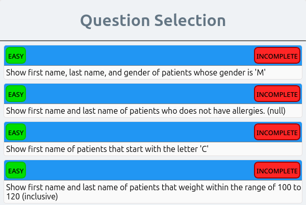

SQL
Classic Data Science
Setup
Big Idea
Data can live in a flat file (.csv) or relational database.
If the file is too big it wont fit into the computer’s memory and the software may crash.
Often data is stored in a database on a server and called up on demand.
To do this we use the Structured Query Language (SQL).
Dialects of SQL
There are SQL, SQL Server, MySQL, PostgreSQL, Oracle, and others.
SQL is old
IT was developed in the 1970s by IBM, but is still in use and important for data science
SQL-Practice
We’ll use this SQL practice to get started.
https://www.sql-practice.com/
The Database db
Here there are two small databases.
- hospitals.db
- northwind.db
We’ll focus on hospitals.
Tables (Data Frames)
There are four tables in hospitals.
They are related, we can see the relationship using the schema.
Most databases are relational.
Variable Types
Categorical
- SQL: Text, CHAR
Numeric
- SQL: DATE, INT
There are more, but they all fall under Categorical or Numeric.
SQL commands
| SQL | dplyr |
|---|---|
| SELECT | Choose a column… |
| FROM | …the data frame |
| WHERE | A condition on a variable |
| GROUP BY | Subset the data for computation |
| HAVING | A condition on grouped variables |
| ORDER BY | Used to arrange the data (use DESC too) |
| LIMIT | Shows only the first so many rows |
| COUNT | Used with Select to count rows |
| IS NULL | Used when searching for missing values |
Example 1
How many doctors are there?
Answer 1
We can probably just count the data to answer this.
But we can also do
SELECT COUNT(doctor_id)
FROM doctorsExample 2
How many cardiologists are there? What are their names?
Answer 2
We can count them, but if there were lots of doctors at several hospitals this would be hard.
SELECT
first_name,
last_name
FROM doctors
WHERE specialty = "Cardiologist"Like and Wild cards
You can use a combination of the command LIKE and a wild card % to answer the question above.
SELECT
first_name,
last_name
FROM doctors
WHERE specialty LIKE "Card%"Example 3
Who is the oldest patient?
Answer 3a
Here we can order the data (or use the min function to find the earliest date).
SELECT
birth_date,
first_name,
last_name
FROM patients
order by birth_dateAnswer 3b
SELECT
min(birth_date),
first_name,
last_name
FROM patientsPractice
There are some built in problems on this platform.
Try questions 1 - 4

Why use R?
We use R because SQL is good for looking up data, but not for visualizing it, creating custom functions, building websites to show off our work or machine learning.
R is good at these things.